Drawing the Hours
Meadow Field Book
Brimstone Butterfly
Folded sulphur-yellow paper wings. Wanders leisurely with delicate flutter and resting glides.
Window Firefly
Appears at Midnight. A slow beetle with a pale abdomen that stays visible between glows. Target radius stays the same throughout the glow cycle.
Night Jasmine
Appears in the last two Midnight visits. Begin a thread inside the flower and the first insect that thread crosses settles on it: the cord ends there and the insect stays put for 24 seconds, which is long enough to draw around it at leisure. It gathers nothing by itself — it thins a crowded field and leaves you a target that holds still. The bloom is spent once its guest arrives, and another opens later.
Paper Lacewing
Appears at Dusk. Mint veined wings fold while it rests on a leaf for 1.5 seconds. Draw a figure-eight with one lacewing and one different insect in separate pockets. Leaves do not count as targets.
Amber Hoverfly
Appears at Noon. Holds still, turns, then shifts a short distance, so it is the easiest insect to draw around.
Azure Damselfly
Slender needle abdomen with 4 gauzy wings. Hovers motionlessly in place, then dashes in sudden straight darts.
Roseate Hawkmoth
Plump velvety body with swept delta wings. Cruises continuously in wide, sweeping arcing loops.
The Cord as a Wall
While drawn, the held cord acts as a wall that fliers and seeds cannot cross. Close the loop before insects escape through the open gap.
Threading & Beads
Drawing your line through an insect threads it onto the cord as a bead. A threaded insect cancels the loop. To enclose insects, draw around them.
Visible Closure & Cord Limit
A loop closes only where the cord crosses itself or lands on the drawn line. When it is closed, the cord glows and the loop fills. If the cord runs past the mark on the cord meter, it snaps.
Kindred Pair
Enclose exactly two insects of the same species (for example, two Brimstones or two Hoverflies). Kindred fliers belong together in a single loop — dividing similar fliers across a figure-eight crossing is invalid.
Trio of Flight
Enclose three fliers representing three different species.
Seed & Wing
Enclose one flier alongside an airborne dandelion seed drifting on the morning breeze.
Flax Flower
Appears throughout Noon and returns in Dusk XVI and Midnight XXIV. Drawing the cord over a flax flower picks it. Your next cord runs 400 px longer — the mark on the cord meter moves right before you start it — and the length is spent on that one cord. A picked flower wilts after twelve seconds. Another grows eight seconds after picking at Noon, or twenty-four seconds later in Dusk and Midnight. A flower is never part of a combination.
Poppy
Appears from Noon X and returns in the busiest visits of each hour. Drawing the cord over a poppy picks it, and everything on the field moves at less than half its speed for eight seconds. The clock does not slow. Another poppy grows twenty seconds after the field is back to speed. A poppy is never part of a combination.
Atrium Hornet
Appears at Noon. Flies like the other insects, wandering and turning on its own. A cord that touches it is cut at once, and a loop that holds one fails.
Web Patch
Appears at Noon. A patch of web strung across the atrium in a fixed place — the one hazard that holds still, because it is a thing rather than a creature. A cord drawn into it sticks and is cut. A loop drawn around one is still valid; the cord simply cannot cross it.
Seed & Trio
Enclose three fliers of three distinct species together with one airborne dandelion seed in a single circular loop.
Counterpart Pair (Two Dissimilar Species)
Enclose two dissimilar fliers across the lobes (e.g. 1 Damselfly in Pocket A, 1 Hawkmoth in Pocket B). While two different species cannot share a single loop, crossing the cord between them balances their contrast into a harmonious bilateral dialogue.
Twin Echo Correspondence (Wave 2 Experiment)
Cross the cord into two lobes: mirror identical species in both pockets (e.g. 1 Damselfly + 1 Hawkmoth in Pocket A and Pocket B). Mixed combinations that fail alone will harmonize through bilateral symmetry!
Cross-Meadow Correspondence
Cross the cord to form two distinct pockets: place a kindred pair in Pocket A, and another kindred pair in Pocket B.
Nursery Polarity
Place exactly one winged traveler in one pocket, and exactly one wild drifting seed in the opposite pocket. More than one of either disturbs the balance.
Ordered Trace
Thread a firefly, a lacewing, then a different firefly in one stroke. From Midnight XXII there is a second order: a lacewing, a firefly, then the other lacewing. Release to finish; the line can stay open or close. Numbered badges show the sequence. Repeating an insect does not count again. A wrong order, extra insects, or enclosing another creature cancels the trace. Leaves do not count.
Ground Crawler (Snail)
At Dawn a snail crawls along the paving seam through the middle of the field; in later hours it keeps to the bottom edge. Your cord can cross a snail safely, but a loop that encloses one gathers nothing. Draw around it.
Meadow Visits & Hours
About Drawing the Hours
Drawing the Hours is a drawing game set among insects and plants in the small spaces of a working day. Its speaker waits for transport, takes a lunch break, brings home medicine, and tries to sleep. During these intervals, the player draws cords around moving creatures, threads them in sequence, and learns combinations.
I remember visiting my mother’s office and seeing a flower doodle among the papers she had to sign and the ledgers she had to look at. She had a moment for whatever reason, to doodle a flower while dealing with paperwork. The speaker here, as well, takes time to doodle through little ecologies. The plants and insects in the game are often set in manmade environments, suggesting an urban space, occupying patches between roads and buildings. I wanted to bring these overlooked ecologies into view and make their movements something a player could think with.
The game began with the looping mechanic of the Flash game Loop. Fruit Ninja informed its cutting and threading gestures, while Candy Crush was another reference for its sequence of short levels. I'm interested in these casual games that fit into waiting and travel, that someone can pick up, pause, and return to as circumstances allow. The mobile and casualness of these games connects these habits of play to the intervals described by the speaker.
Casual and childlike games are often seen as simple, but I wanted to push one to become quite complicated, as childhood and idle thoughts can become. The cords also suggest cat’s cradle, sewing, and needlework, threading activities which all have associations with domestic life, childhood, and activities seen as feminine. The game also asks for different ways of playing, like speed at some moments or patience at others, or carefulness.
There is something magical about learning multiple recipes, gestures, and timing, to produce particular results. For the speaker in the game or the player, then, this drawing of little ecologies between hours of activity could be a way to think, find amusement or relief, change how a situation feels, just observe, see something in a new light, etc.: all these different functions of play in a life.
Field Encyclopedia
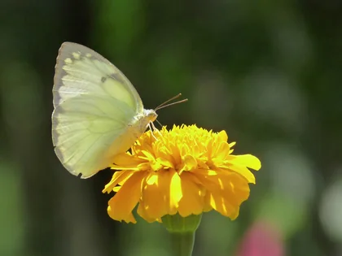
Lemon Emigrant Catopsilia pomona · Pieridae · Paruparo
Common across Philippine gardens and sunny forest edges, known locally as paruparo. Famous for large, coordinated migratory flights that follow seasonal monsoons. The caterpillars feed on cassia and golden shower trees (Cassia fistula). In the meadow, it wanders leisurely on gentle glides, folded sulphur wings catching the morning light.
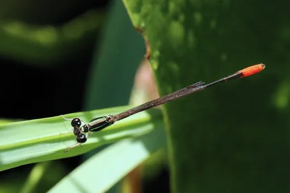
Tutubing Karayom Agriocnemis femina · Coenagrionidae · Tutubi
One of the smallest damselflies in the world, thriving in rice fields, irrigation ditches, and garden ponds throughout the archipelago. Females display striking color polymorphism, shifting from young brick-orange to brilliant apple-green. In the field, it hovers motionless in mid-air before darting away in sudden straight dashes.
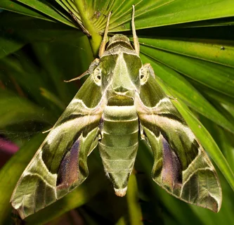
Oleander Hawkmoth Daphnis nerii · Sphingidae · Gamugamo
A large, aerodynamic sphinx moth patterned in geometric swathes of army green, rose-mauve, and cream. Highly capable nocturnal flyer that can hover while sipping nectar from deep blossoms with its long proboscis. In Drawing the Hours, its velvety body sweeps through wide, deliberate arcs across the lawn.
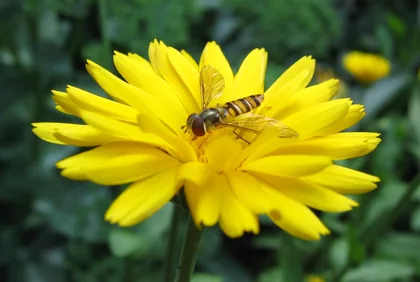
Amber Bubuyog Episyrphus balteatus · Syrphidae
Though marked with yellow-and-black abdominal bands like a stinging wasp or honeybee, this hoverfly is completely harmless. It is an indispensable pollinator whose larvae eat aphids. In the meadow, it holds perfectly still on vibrating invisible wings, pivots in place, and shifts in crisp lateral steps.
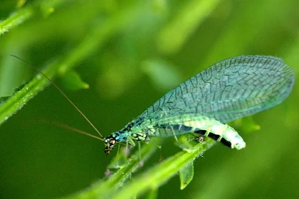
Green Lacewing Chrysopa perla · Chrysopidae
Characterized by delicate jade-tinted veined wings and metallic copper-gold eyes, often called golden-eyes. Females lay eggs perched at the tips of hair-like silken stalks on leaf undersides. In the Dusk hour, it flutters softly between planters and rests on leaves for brief moments of quiet.
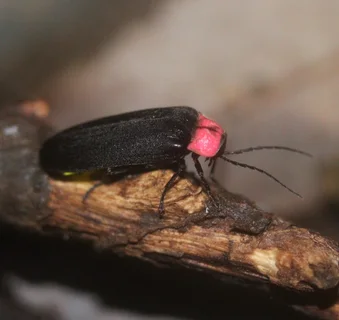
Alitaptap Luciola cruciata · Lampyridae
Famous in Philippine folklore and riverbanks, where entire mangrove trees blink in synchronous unison. Their bioluminescent glow is produced through cold enzymatic oxidation with almost zero heat loss. In the Midnight visits, its pale lantern stays faintly visible even between its gentle pulses.
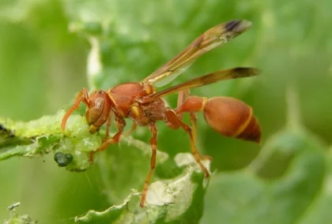
Putakti Ropalidia marginata · Vespidae
Social paper wasps native to the islands, renowned for crafting hexagonal umbrella-shaped nests from chewed plant fibers mixed with saliva. Vigilant guardians of their territory. In the atrium at Noon, it patrols on sharp wings, cutting any held cord that crosses its flight path.
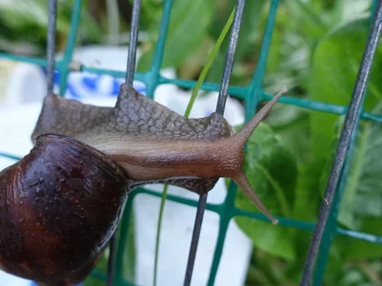
Giant African Snail Lissachatina fulica · Achatinidae
A large tropical land snail introduced throughout Southeast Asia, common in damp verges and garden edges. It moves at unhurried leisure on its muscular foot, leaving a fine track across stone pavers. Drawn cords cross it safely, but any loop that encloses one gathers nothing.
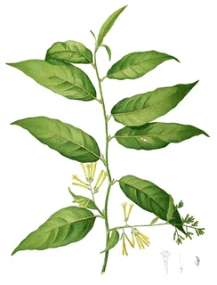
Dama de Noche Cestrum nocturnum · Solanaceae
Lady of the Night, famously documented in Blanco's 1837 Flora de Filipinas. Its greenish-white tubular blossoms remain unassuming by day, but release an intoxicatingly sweet fragrance after sunset to draw nocturnal moths. Threading a cord into the bloom invites a passing flyer to settle there in stillness.
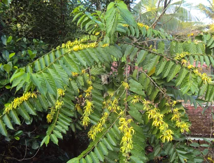
Ylang-Ylang Cananga odorata · Annonaceae
Indigenous to the Philippines (ilang-ilang meaning wilderness or rare), renowned for drooping star-shaped blossoms whose essential oils form the heart of fine perfumes. Its aroma has documented calming and sedative properties. Drawing cord over the blossom slows the rush of meadow visitors to half speed.
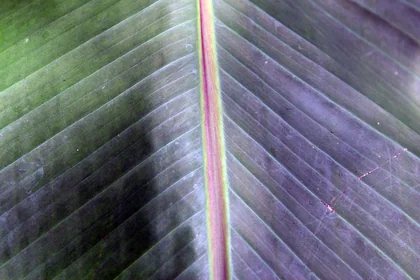
Abaca Flower Musa textilis · Musaceae
A wild relative of the banana native to the Philippines, prized worldwide as Manila hemp for the incredible tensile strength and saltwater resilience of its fiber. Historically used for maritime cordage and fine woven sinamay. Gathering the blossom rewards you with 400 pixels of additional cord on your next stroke.
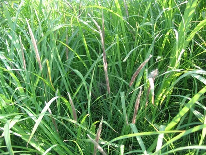
Cogon Plume Imperata cylindrica · Poaceae
A resilient perennial grass blanketing Philippine plains and open verges. During the dry season, its flowering spikes erupt into dense, silvery-white silky plumes. Detached by the wind, individual seed plumes drift lazily on rising air currents across the field like feathered parachutes.